Distillate Market Tightness Continues in Northeast
Inventories of distillate fuel remain below seasonally typical levels in the Northeast, a region that includes New England and the Middle Atlantic states. Stocks of distillate fuel, including both diesel fuel and heating oil, are closely watched in this region, which is home to 80 percent of U.S. households that consume heating oil. As discussed in the October 11 edition of This Week in Petroleum (TWIP), the pull on distillate supplies from global markets and backwardation in heating oil prices for future delivery have both discouraged inventory builds in the Northeast. More recently, Hurricane Sandy disrupted shipments of petroleum products into the Northeast, further limiting distillate inventory builds. However, additional distillate fuel supplies are likely to become available in the region over the coming weeks with the restart of refineries in the New York Harbor area and an increase in shipments from the Gulf Coast.
Distillate fuel inventories in the Northeast fell in nine of the last ten weeks to 26.1 million barrels on November 16 (Figure 1). Inventories are now 6.3 million barrels (20 percent) lower than they were on September 7, and 23.1 million barrels (47 percent) below the five-year average. About 40 percent of the 6-million-barrel draw has taken place in the three weeks since Hurricane Sandy, as storm-related damage to terminal, pipeline, and refinery infrastructure has limited product flows into the Northeast.
{kind=link}
Recent draws are only one part of the Northeast distillate inventory story. In 2012, distillate inventories did not increase over the summer months as they typically do, and as a result were low heading into autumn. From 2007 to 2011, distillate fuel inventories in the Northeast typically increased by about 16.3 million barrels (48 percent) from late April through late September, before leveling off between late September and Thanksgiving. Draws have historically picked up in December as colder weather takes hold in the Northeast. This year, a strong global distillate market lifted prices for heating oil in Europe above prices in New York Harbor during the spring, encouraging distillate exports from the Northeast. Year-to-date in 2012, distillate exports from the East Coast have averaged 138,000 barrels per day (bbl/d), a 49,000-bbl/d (54-percent) increase compared to the same period in 2011. Higher exports contributed to the 2.4-million-barrel decline in inventories from late April through late September.
There are some signs that supplies of distillate in the Northeast could increase in the next few weeks. As of November 16, weekly data indicated that refinery runs on the East Coast were 218,000 bbl/d below their pre-storm four-week average level. However, the 70,000-bbl/d Hess Port Reading refinery has recently begun to operate. Also, Phillips 66 has reported plans for its 238,000-bbl/d Bayway Refinery in Linden, New Jersey to be partially operational late this month, adding more locally produced distillate supplies to the New York Harbor market.
Additionally, distillate price spreads between New York Harbor and other major product hubs could attract products to New York. As of November 20, heating oil in New York Harbor was trading at premiums of four cents per gallon and five cents per gallon to Europe's Amsterdam-Rotterdam-Antwerp (ARA) hub and the U.S. Gulf Coast, respectively. It is unlikely that the differentials to ARA will encourage significant shipments of distillate from Europe to the Northeast; in the short term, however, it will likely discourage flows the opposite way.
Backwardation (where futures contracts settling in the prompt month are trading at a higher value than those settling further in the future) on the front end of the heating oil futures curve has also moderated, lessening the short-term incentive to sell inventories into the prompt market. On October 29, the prompt November futures contract sold at a 5-cent-per-gallon premium to the contract settling in January, which is much stronger backwardation than typically is seen during October. However, backwardation declined sharply with the rolling of the prompt contract to December and with regulatory waivers easing supply concerns. As of November 20, the prompt contract was selling at a penny-per-gallon discount to the third-month contract, which is now for delivery in February.
Despite possible easing in the Northeast distillate market in the coming weeks, the heating season typically gathers steam in December. Over the past five years, consumption of distillate fuel increased by an average of 181,000 bbl/d from November to December in Petroleum Administration for Defense District (PADD) 1 which includes the Lower Atlantic states as well as the Northeast. The increase typically resulted in a draw from Northeast distillate inventories in December of 4.4 million barrels. However, this year, demand growth is uncertain. The residential heating oil market has been in structural decline over the last decade as many consumers have switched to more economically competitive fuels for space heating, such as natural gas. With the heating oil market shrinking, fewer inventories are needed to cover space heating demand. While the magnitude of the decline in heating oil demand is unclear, inventories are likely still below historical levels on a demand-cover basis, but more adequate than what current levels relative to a five-year average suggest. Additionally, the extent to which Hurricane Sandy affected distillate demand is not yet evident. Weather also adds uncertainty to expectations of heating oil demand. Based on the National Oceanic and Atmospheric Administration forecast, in its (November Short-Term Energy Outlook) the U.S. Energy Information Administration projects heating degree days in the Northeast will be about 20 percent higher than last winter, but about 2 percent lower than the 30-year normal. Significant deviations from this forecast could affect heating oil demand, inventories, and prices.
Gasoline prices fall for a sixth straight week, diesel fuel for a fifth
The U.S. average retail price of regular gasoline decreased two cents last week to $3.43 per gallon, six cents higher than last year at this time. The largest decrease came on the West Coast for the fourth consecutive week, with the price down eight cents from last week to $3.71 per gallon. The Rocky Mountain price dropped a nickel from last week to $3.51 per gallon. East of the Rockies, the East Coast price is now $3.48 per gallon, down a penny from last week. The Gulf Coast price remains the lowest in the Nation at $3.17 per gallon, a decrease of four cents per gallon. Going against the trend, the Midwest price increased a penny to $3.34 per gallon.
The national average diesel fuel price decreased less than a penny to remain at $3.98 per gallon, three cents lower than last year at this time. The largest decrease came in the Rocky Mountain region, where the price fell five cents to $4.06 per gallon. The West Coast price is now $4.09 per gallon, four cents lower than last week. Down a penny, the Gulf Coast price is $3.87 per gallon. The Midwest price is up less than a penny to remain at $3.91 per gallon, and the East Coast price increased two cents to $4.05 per gallon.
Propane inventories fall again
Total U.S. inventories of propane dropped 0.5 million barrels last week to end at 72.7 million barrels, 22 percent higher than a year ago. The Midwest region led the decline, withdrawing 0.8 million barrels. Meanwhile, East Coast stocks fell 0.2 million barrels and Rocky Mountain/West Coast stocks fell slightly. The Gulf Coast region added 0.5 million barrels of propane inventory. Propylene non-fuel-use inventories represented 5.8 percent of total propane inventories.
Residential heating oil and propane prices show little change
Residential heating oil prices remained flat during the period ending November 19, 2012. The average residential heating oil price fell a fraction of a cent to remain at $3.98 per gallon for the third week in a row, 4 cents per gallon higher than the same time last year. Wholesale heating oil prices rose by 4 cents per gallon last week to reach $3.21 per gallon, almost 8 cents per gallon more than last year at this time.
The average residential propane price increased by less than a penny last week to $2.41 per gallon, 43 cents per gallon lower than the same period last year. Wholesale propane prices decreased by a penny to just under $0.95 per gallon for the week ending November 19, 2012, almost 53 cents per gallon lower than the November 21, 2011 price.
Text from the previous editions of This Week In Petroleum is accessible through a link at the top right-hand corner of this page.
| 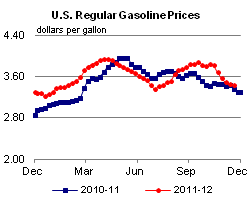 | 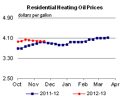 | ||||||
| 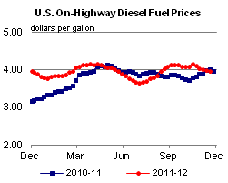 | 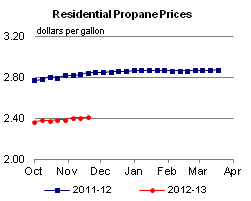 | ||||||
| Retail Data | Change From Last | Retail Data | Change From Last | ||||
| 11/19/12 | Week | Year | 11/19/12 | Week | Year | ||
| Gasoline | 3.429 | Heating Oil | 3.976 | ||||
| Diesel Fuel | 3.976 | Propane | 2.406 | ||||
| 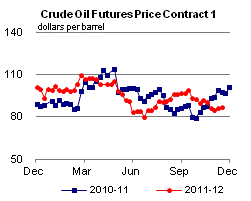 | 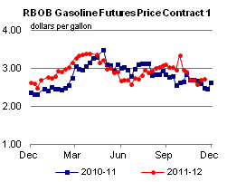 | ||||||||||||||||||||||||||
|
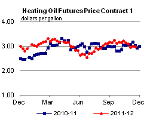 | ||||||||||||||||||||||||||
| *Note: Crude Oil Price in Dollars per Barrel. | |||||||||||||||||||||||||||
| 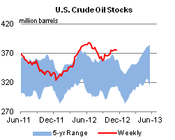 | 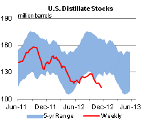 | ||||||
| 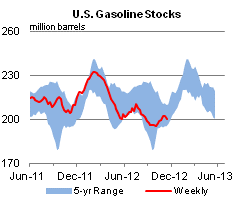 | 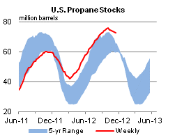 | ||||||
| Stocks Data | Change From Last | Stocks Data | Change From Last | ||||
| 11/16/12 | Week | Year | 11/16/12 | Week | Year | ||
| Crude Oil | 374.5 | Distillate | 112.8 | ||||
| Gasoline | 200.4 | Propane | 72.666 | ||||